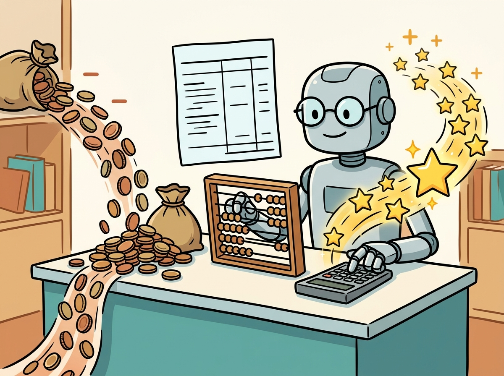

If you cannot measure the return, you cannot defend the investment. If you cannot defend the investment, you will not have it for long.
An Analytical Compass, ROI-Fixated AI Agent
Every dollar spent on LLM infrastructure, API calls, and engineering time must be traceable to a business outcome. Without rigorous ROI measurement, AI investments become acts of faith that are first to be cut during budget reviews. Building on the cost optimization analysis from Section 13.4, this section provides concrete frameworks for calculating return on investment across the most common LLM use cases, methods for attributing value when multiple factors contribute to an outcome, and a hands-on lab for building a complete ROI model for a conversational AI agent.
Prerequisites
Before starting, make sure you are familiar with product management from Section 31.2, the evaluation metrics from Section 28.1, and the inference optimization techniques from Section 9.1.

31.3.1 The LLM ROI Framework
Every doubling of model quality from frontier-class iteration has come with a 2-10x increase in token consumption per query (CoT, reasoning models, agentic loops). This breaks naive ROI projections that assume token cost falls along Moore's-law lines. The right framing is to model quality per dollar on a Pareto frontier and treat token cost as the price of a particular quality tier. A model that is 10x cheaper but generates 10x more tokens to achieve the same task quality has not actually gotten cheaper. Vendors will continue to externalize compute as inference scaling, so this "thinking-time tax" is a structural trend, not temporary.
Your CFO asks: "We spent \$200,000 on this AI project. What did we get for it?" If you cannot answer with specific numbers, the project is at risk in the next budget cycle. The evaluation frameworks from Chapter 28 provide the quality metrics; this section provides the financial frameworks. LLM ROI is calculated as net benefit (value generated minus total cost) divided by total cost, expressed as a percentage. Both sides of the equation contain components that are tricky to measure, which is why you need a structured framework. Figure 31.3.1 presents this framework visually.
LLM ROI works like double-entry bookkeeping: every transaction has both a debit (cost) and a credit (value) side, and both sides contain line items that are easy to overlook. On the cost side, teams forget maintenance, opportunity cost, and the hidden "prompt engineering tax." On the value side, they miss second-order benefits like employee satisfaction and knowledge capture. The ROI calculation only tells the truth when both columns are complete. Unlike traditional accounting, though, some LLM value items (creativity unlocked, decisions improved) resist precise quantification and require proxy metrics.
from dataclasses import dataclass
@dataclass
class LLMROIModel:
"""Generic ROI model for LLM projects over a given time horizon."""
name: str
horizon_months: int
# Costs (all in USD)
dev_cost: float # one-time development
infra_monthly: float # monthly infrastructure
api_monthly: float # monthly API charges
maintenance_monthly: float # monthly maintenance
# Value (all in USD)
labor_savings_monthly: float
speed_value_monthly: float
quality_value_monthly: float
revenue_impact_monthly: float
def total_cost(self) -> float:
recurring = (self.infra_monthly + self.api_monthly
+ self.maintenance_monthly) * self.horizon_months
return self.dev_cost + recurring
def total_value(self) -> float:
monthly = (self.labor_savings_monthly + self.speed_value_monthly
+ self.quality_value_monthly + self.revenue_impact_monthly)
return monthly * self.horizon_months
def roi_percent(self) -> float:
cost = self.total_cost()
return ((self.total_value() - cost) / cost) * 100
def payback_months(self) -> float:
monthly_net = (self.labor_savings_monthly + self.speed_value_monthly
+ self.quality_value_monthly + self.revenue_impact_monthly
- self.infra_monthly - self.api_monthly
- self.maintenance_monthly)
if monthly_net <= 0:
return float("inf")
return self.dev_cost / monthly_net
def summary(self) -> str:
return (f"{self.name} ({self.horizon_months}mo horizon)\n"
f" Total Cost: ${self.total_cost():>12,.0f}\n"
f" Total Value: ${self.total_value():>12,.0f}\n"
f" ROI: {self.roi_percent():>11.1f}%\n"
f" Payback: {self.payback_months():>11.1f} months")
The "GPU-poor" movement, a term coined by AI researchers who lack access to large compute clusters, has driven many of the most creative efficiency innovations: LoRA, QLoRA, speculative decoding, and model merging all emerged partly because researchers needed to do more with less. Constraints breed creativity, even in AI.
ROI attribution for LLM systems is harder than for traditional software. When you deploy a database that is 2x faster, the performance gain is directly measurable. When you deploy an LLM coding assistant, the productivity gain is distributed across hundreds of small interactions per day, contaminated by confounders (developer experience, task difficulty, codebase complexity), and partially offset by time spent reviewing AI-generated code. This measurement challenge is why the case studies below use conservative attribution models and range estimates rather than precise point values. The evaluation discipline from Section 28.2 (confidence intervals, effect sizes) applies directly to ROI measurement.
When calculating LLM ROI, use a 6-month payback period as your initial hurdle rate, not a 12-month one. LLM capabilities and pricing change so rapidly that any projection beyond 6 months is speculative. If the project does not break even in 6 months under conservative assumptions, either reduce scope or wait for the next cost reduction cycle (which, historically, arrives every 6 to 9 months).
31.3.2 Coding Assistant ROI
Coding assistants (GitHub Copilot, Cursor, Cody) are among the most widely deployed LLM applications in enterprises. Their ROI is driven primarily by developer productivity gains, measured as reduced time on routine coding tasks, fewer context switches, and faster onboarding.
# ROI model for a coding assistant deployment (100 developers)
coding_assistant = LLMROIModel(
name="Coding Assistant (100 devs)",
horizon_months=12,
dev_cost=15_000, # setup, SSO integration, policy config
infra_monthly=0, # SaaS, no self-hosting
api_monthly=3_900, # 100 devs x $39/seat/month
maintenance_monthly=500, # admin time, policy updates
labor_savings_monthly=8_333, # ~10% productivity gain on $1M annual salary
speed_value_monthly=4_167, # faster feature delivery (est. 5% revenue impact)
quality_value_monthly=2_000, # fewer bugs in production
revenue_impact_monthly=0, # indirect, hard to measure
)
print(coding_assistant.summary())The 10% productivity gain used here is conservative. Studies from GitHub and Google report 20 to 55% faster task completion for specific coding activities. However, the improvement is not uniform: boilerplate code generation shows the largest gains, while complex architectural decisions show minimal benefit. Use the conservative estimate for business cases and track actual gains over time.
31.3.3 Customer Support ROI
Customer support is the second most common enterprise LLM use case. The ROI model for support differs from coding assistants because it involves a mix of full automation (chatbot deflection) and human augmentation (agent copilot). Each channel has different economics.
# ROI model for AI-powered customer support
support_ai = LLMROIModel(
name="Customer Support AI",
horizon_months=12,
dev_cost=150_000, # RAG pipeline, fine-tuning, integration
infra_monthly=4_500, # vector DB, inference GPU, monitoring
api_monthly=6_000, # LLM API calls (200K tickets/yr)
maintenance_monthly=3_000, # knowledge base updates, model retraining
labor_savings_monthly=19_250, # 55% cost reduction on $420K annual support
speed_value_monthly=3_000, # faster resolution, fewer escalations
quality_value_monthly=2_500, # higher CSAT, fewer repeat contacts
revenue_impact_monthly=1_500, # reduced churn from better support
)
print(support_ai.summary())The customer support ROI barely breaks even in Year 1 because of the high upfront development cost (\$150K). This is typical for custom-built RAG systems. The investment becomes compelling in Year 2 when the development cost is fully amortized and monthly net value compounds. Always present multi-year ROI projections for projects with significant upfront investment, not just the first-year snapshot.
31.3.4 Attribution Challenges
Value attribution is the hardest part of LLM ROI. When a customer support team implements an AI copilot, improves their training program, and hires two senior agents in the same quarter, how much of the improvement should be attributed to the AI system? There are three common attribution approaches, each with tradeoffs.
| Attribution Method | How It Works | Strengths | Weaknesses |
|---|---|---|---|
| A/B Test | Randomly assign users to AI-assisted vs. control groups | Gold standard for causal attribution | Expensive; contamination risk; ethical concerns |
| Before/After | Compare metrics from the period before and after deployment | Simple; uses existing data | Cannot separate AI effect from other changes |
| Synthetic Control | Compare treated group to a weighted combination of untreated groups | Controls for confounders without randomization | Requires comparable untreated groups; complex |
Figure 31.3.4 illustrates the attribution challenge: when ticket cost drops from \$35 to \$18, how much of the improvement is attributable to the AI copilot versus other concurrent changes?
Lab: Building a Conversational AI Agent ROI Model
In this lab, you will build a complete ROI model for a conversational AI agent that handles first-line customer inquiries. The model accounts for variable costs (per-conversation API charges), fixed costs (infrastructure and maintenance), and multiple value streams.
from dataclasses import dataclass
import json
@dataclass
class ConversationalAgentROI:
"""Detailed ROI model for a conversational AI agent.
Handles per-conversation variable costs and multiple value streams.
"""
# Volume assumptions
monthly_conversations: int
avg_turns_per_conversation: int
deflection_rate: float # fraction handled without human
# Per-conversation costs
avg_input_tokens: int
avg_output_tokens: int
input_price_per_million: float # USD per 1M tokens
output_price_per_million: float
# Fixed monthly costs
infra_monthly: float
maintenance_monthly: float
# One-time costs
development_cost: float
# Value parameters
cost_per_human_conversation: float # fully loaded agent cost
csat_revenue_impact_monthly: float # reduced churn value
def monthly_api_cost(self) -> float:
total_turns = self.monthly_conversations * self.avg_turns_per_conversation
input_cost = (total_turns * self.avg_input_tokens / 1_000_000
* self.input_price_per_million)
output_cost = (total_turns * self.avg_output_tokens / 1_000_000
* self.output_price_per_million)
return input_cost + output_cost
def monthly_total_cost(self) -> float:
return self.monthly_api_cost() + self.infra_monthly + self.maintenance_monthly
def monthly_labor_savings(self) -> float:
deflected = self.monthly_conversations * self.deflection_rate
return deflected * self.cost_per_human_conversation
def annual_roi_report(self) -> dict:
annual_cost = self.development_cost + self.monthly_total_cost() * 12
annual_savings = self.monthly_labor_savings() * 12
annual_revenue = self.csat_revenue_impact_monthly * 12
annual_value = annual_savings + annual_revenue
roi = ((annual_value - annual_cost) / annual_cost) * 100
return {
"annual_api_cost": round(self.monthly_api_cost() * 12),
"annual_infra_cost": round(self.infra_monthly * 12),
"annual_maintenance": round(self.maintenance_monthly * 12),
"development_cost": round(self.development_cost),
"total_annual_cost": round(annual_cost),
"annual_labor_savings": round(annual_savings),
"annual_revenue_impact": round(annual_revenue),
"total_annual_value": round(annual_value),
"roi_percent": round(roi, 1),
"cost_per_ai_conversation": round(
self.monthly_total_cost() / self.monthly_conversations, 3
),
"cost_per_human_conversation": self.cost_per_human_conversation,
}
# Build the model
agent_roi = ConversationalAgentROI(
monthly_conversations=25_000,
avg_turns_per_conversation=4,
deflection_rate=0.45,
avg_input_tokens=800,
avg_output_tokens=300,
input_price_per_million=3.0, # GPT-4o-mini pricing
output_price_per_million=12.0,
infra_monthly=2_500,
maintenance_monthly=2_000,
development_cost=120_000,
cost_per_human_conversation=8.50,
csat_revenue_impact_monthly=3_000,
)
report = agent_roi.annual_roi_report()
print(json.dumps(report, indent=2))
The cost per AI conversation (\$0.29) is 29x cheaper than the cost per human conversation (\$8.50). This ratio is the fundamental driver of conversational AI ROI. Even with development costs of \$120K and a deflection rate of just 45%, the annual ROI exceeds 500%. The key sensitivity variables are deflection rate and monthly conversation volume: a 10% increase in deflection rate adds approximately \$255K in annual savings.
This lab uses approximate mid-tier API pricing (\$3/\$12 per million tokens for input/output) as a reference point to illustrate the ROI model. Actual API costs vary significantly across providers, model tiers, and time periods. For example, GPT-4o-mini pricing is roughly \$0.15/\$0.60 per million tokens (much cheaper), while GPT-4o runs closer to \$2.50/\$10.00. Always use your actual contracted rates when building production ROI models. Section 31.5 covers the breakeven analysis between API-based and self-hosted inference.
1. Why does the customer support ROI model show only 1% ROI in Year 1?
Show Answer
2. What are the three attribution methods discussed, and which is considered the gold standard?
Show Answer
3. In the conversational AI agent ROI model, what is the cost ratio between AI and human conversations?
Show Answer
4. Why is the coding assistant ROI payback period (1.5 months) so much shorter than the customer support payback (14.4 months)?
Show Answer
5. What are the key sensitivity variables for the conversational AI agent ROI model?
Show Answer
Who: An engineering director and a finance business partner at a mid-size technology company
Situation: The engineering director wanted to deploy GitHub Copilot for all 120 developers at \$19 per user per month (\$27,360 annually). Finance required a clear ROI justification.
Problem: Developer productivity is notoriously difficult to measure. Lines of code, commit frequency, and story points are all flawed proxies. Finance was skeptical of any metric that could not be tied directly to revenue or cost savings.
Dilemma: Running a rigorous A/B test (half the team with Copilot, half without) would create fairness concerns and was logistically complex. Relying on self-reported productivity gains would lack credibility.
Decision: They ran a phased pilot: 30 developers received Copilot for 8 weeks, with task-level time tracking on matched work items. They measured time-to-completion on comparable pull requests before and after deployment.
How: They tracked median PR cycle time, boilerplate code generation time (measured via survey), and test writing speed. They used a before/after design with the pilot group as its own control.
Result: Median PR cycle time dropped 18%. Developers reported saving an average of 52 minutes per day. At a fully loaded cost of \$85/hour, the annual productivity gain was estimated at \$795K against the \$27K cost, yielding an ROI above 2,800% with payback in under two weeks.
Lesson: Coding assistant ROI is straightforward to prove because the cost is low and the impact is broadly distributed. Use task-level time tracking on matched work items rather than aggregate metrics to build a credible case.
- Structure costs and value separately: The ROI framework divides both sides into measurable categories (development, infrastructure, API, maintenance vs. labor savings, speed, quality, revenue).
- Coding assistants have fast payback: Low setup cost and broad impact across 100+ developers produce ROI above 150% with payback under 2 months.
- Custom solutions need multi-year views: Support AI with \$150K development cost barely breaks even in Year 1 but generates compelling returns from Year 2 onward.
- Attribution is the hardest part: A/B testing is the gold standard but expensive; before/after analysis is simple but confounded; synthetic control offers a middle ground.
- Per-conversation cost ratio drives support ROI: At \$0.29 per AI conversation versus \$8.50 per human conversation, even modest deflection rates produce large savings.
- Sensitivity analysis is essential: Always identify the 2 to 3 variables that most affect ROI (typically deflection rate, volume, and development cost) and present scenarios for optimistic, base, and pessimistic assumptions.
Put these concepts into practice in the Hands-On Lab at the end of this section.
Lab: Build an LLM ROI Calculator
Objective
Build an interactive ROI calculator that models costs and savings for three common LLM deployment scenarios (coding assistant, customer support AI, and content generation), including sensitivity analysis and multi-year projections.
What You'll Practice
- Structuring cost models with development, infrastructure, and API components
- Computing ROI, payback period, and net present value for LLM projects
- Running sensitivity analysis across key variables
- Building multi-year projection models with growth assumptions
- Generating executive-ready comparison reports
Setup
The following cell installs the required packages and configures the environment for this lab.
# NumPy computation
pip install numpyfrom dataclasses import dataclass, field
from typing import Optional
import numpy as np
@dataclass
class LLMCostModel:
"""Cost model for an LLM deployment scenario."""
name: str
description: str
# One-time costs
development_cost: float = 0.0 # Engineering time to build
integration_cost: float = 0.0 # Cost to integrate with existing systems
training_data_cost: float = 0.0 # Data preparation, labeling
# Recurring monthly costs
api_cost_per_month: float = 0.0 # LLM API usage
infrastructure_per_month: float = 0.0 # Hosting, compute
maintenance_per_month: float = 0.0 # Ongoing engineering maintenance
# Value drivers (monthly)
labor_savings_per_month: float = 0.0
revenue_increase_per_month: float = 0.0
quality_savings_per_month: float = 0.0 # Error reduction, rework avoidance
speed_savings_per_month: float = 0.0 # Time-to-market improvements
@property
def total_one_time_cost(self) -> float:
return self.development_cost + self.integration_cost + self.training_data_cost
@property
def total_monthly_cost(self) -> float:
return self.api_cost_per_month + self.infrastructure_per_month + self.maintenance_per_month
@property
def total_monthly_value(self) -> float:
return (self.labor_savings_per_month + self.revenue_increase_per_month +
self.quality_savings_per_month + self.speed_savings_per_month)
# TODO: Create three scenario instances:
# 1. Coding Assistant: $15K dev, $200/mo API, $2K/mo labor savings across 50 devs
# 2. Customer Support AI: $120K dev, $800/mo API, $25K/mo labor savings (deflection)
# 3. Content Generation: $40K dev, $500/mo API, $8K/mo labor savings
coding_{assistant} = None # Replace with LLMCostModel(...)
support_{ai} = None # Replace with LLMCostModel(...)
content_{gen} = None # Replace with LLMCostModel(...)
scenarios = [coding_{assistant}, support_{ai}, content_{gen}]
for s in scenarios:
print(f"{s.name}: one-time=${s.total_one_time_cost:,.0f}, monthly_cost=${s.total_{monthly}_{cost}:,.0f}, monthly_{value}=${s.total_monthly_value:,.0f}")No API key needed. This lab uses pure Python calculations.
Steps
Step 1: Define the cost model structure
Create a data model that captures all cost categories and value drivers for an LLM deployment.
Hint
Example: coding_assistant = LLMCostModel(name="Coding Assistant", description="AI pair programmer for 50 developers", development_cost=15000, api_cost_per_month=200, maintenance_per_month=500, labor_savings_per_month=2000, speed_savings_per_month=1500). Adjust numbers to be realistic for your scenarios.
Step 2: Build the ROI calculator
Implement functions to compute ROI percentage, payback period, and net present value over a given time horizon.
class ROICalculator:
"""Calculate ROI metrics for LLM deployment scenarios."""
def __init__(self, model: LLMCostModel, months: int = 12):
self.model = model
self.months = months
def total_cost(self) -> float:
"""Total cost over the time horizon."""
return self.model.total_one_time_cost + (self.model.total_monthly_cost * self.months)
def total_value(self) -> float:
"""Total value generated over the time horizon."""
return self.model.total_monthly_value * self.months
def net_benefit(self) -> float:
"""Net benefit = total value minus total cost."""
return self.total_value() - self.total_cost()
def roi_percentage(self) -> float:
"""ROI = (net benefit / total cost) * 100."""
cost = self.total_cost()
if cost == 0:
return 0.0
return (self.net_benefit() / cost) * 100
def payback_months(self) -> Optional[float]:
"""Months until cumulative value exceeds cumulative cost."""
# TODO: Calculate month-by-month cumulative costs and value.
# The payback month is when cumulative value first exceeds cumulative cost.
# Return None if payback never happens within 36 months.
pass
def npv(self, annual_discount_rate: float = 0.10) -> float:
"""Net Present Value with monthly discounting."""
monthly_rate = annual_discount_rate / 12
npv = -self.model.total_one_time_cost
# TODO: For each month, compute the net cash flow
# (monthly_value minus monthly_cost) and discount it.
# NPV += net_cash_flow / (1 + monthly_rate) ** month
pass
# Test with each scenario
for scenario in scenarios:
calc = ROICalculator(scenario, months=12)
print(f"\n{scenario.name} (12 months):")
print(f" Total Cost: ${calc.total_{cost}():>12,.0f}")
print(f" Total Value: ${calc.total_value():>12,.0f}")
print(f" Net Benefit: ${calc.net_{benefit}():>12,.0f}")
print(f" ROI: {calc.roi_{percentage}():>11.1f}%")
print(f" Payback: {calc.payback_{months}()} months")
print(f" NPV (10%): ${calc.npv():>12,.0f}")Hint
For payback: cumulative_cost = self.model.total_one_time_cost; cumulative_value = 0. Loop month 1 to 36: cumulative_cost += self.model.total_monthly_cost; cumulative_value += self.model.total_monthly_value. If cumulative_value >= cumulative_cost, return that month. For NPV: for m in range(1, self.months+1): net = self.model.total_monthly_value - self.model.total_monthly_cost; npv += net / (1 + monthly_rate)**m.
Step 3: Implement sensitivity analysis
Build a function that varies key parameters across a range and shows how ROI changes, identifying the variables that matter most.
# implement sensitivity_analysis
def sensitivity_analysis(base_model: LLMCostModel, months: int = 12) -> dict:
"""Run sensitivity analysis on key variables."""
variations = [0.5, 0.75, 1.0, 1.25, 1.5] # 50% to 150% of base value
results = {}
# Variables to test
variables = {
"api_cost_per_month": base_model.api_cost_per_month,
"labor_savings_per_month": base_model.labor_savings_per_month,
"development_cost": base_model.development_cost,
}
for var_name, base_value in variables.items():
var_results = []
for mult in variations:
# TODO: Create a copy of the model with this variable modified
# Calculate ROI at this variation
# Store the multiplier and resulting ROI
pass
results[var_name] = var_results
return results
# Run sensitivity for support AI (the most expensive scenario)
print(f"\n=== Sensitivity Analysis: {support_ai.name} ===\n")
sensitivity = sensitivity_analysis(support_ai)
for var_name, var_results in sensitivity.items():
print(f" {var_name}:")
for entry in var_results:
bar = "#" * max(0, int(entry["roi"] / 10))
print(f" {entry['multiplier']:.0%} of base -> ROI: {entry['roi']:>7.1f}% {bar}")
print()Hint
To create a modified copy, use from dataclasses import replace: modified = replace(base_model, **{var_name: base_value * mult}). Then calc = ROICalculator(modified, months); var_results.append({"multiplier": mult, "roi": calc.roi_percentage()}).
Step 4: Build multi-year projections
Create a projection model that accounts for usage growth, cost reduction over time, and cumulative ROI curves.
# implement multi_year_projection
def multi_year_projection(model: LLMCostModel, years: int = 3,
annual_usage_growth: float = 0.20,
annual_cost_reduction: float = 0.15) -> dict:
"""Project costs and value over multiple years with growth assumptions."""
projection = {"years": [], "cumulative_cost": [], "cumulative_value": [],
"annual_roi": [], "cumulative_roi": []}
cum_cost = model.total_one_time_cost
cum_value = 0.0
for year in range(1, years + 1):
# TODO: Calculate annual costs and value for this year.
# Apply usage_growth to value (compound annually).
# Apply cost_reduction to API costs (providers get cheaper each year).
# Track cumulative totals and per-year ROI.
growth_mult = (1 + annual_usage_growth) ** (year - 1)
cost_mult = (1 - annual_cost_reduction) ** (year - 1)
annual_api = model.api_cost_per_month * 12 * cost_mult
annual_other = (model.infrastructure_per_month + model.maintenance_per_month) * 12
annual_cost = annual_api + annual_other
annual_value = model.total_monthly_value * 12 * growth_mult
cum_cost += annual_cost
cum_value += annual_value
projection["years"].append(year)
projection["cumulative_cost"].append(cum_cost)
projection["cumulative_value"].append(cum_value)
year_roi = ((annual_value - annual_cost) / annual_cost * 100) if annual_cost > 0 else 0
cum_roi = ((cum_value - cum_cost) / cum_cost * 100) if cum_cost > 0 else 0
projection["annual_roi"].append(year_roi)
projection["cumulative_roi"].append(cum_roi)
return projection
# Run projections for all scenarios
print("=== 3-YEAR PROJECTIONS ===\n")
for scenario in scenarios:
proj = multi_year_projection(scenario, years=3)
print(f"{scenario.name}:")
for i, year in enumerate(proj["years"]):
print(f" Year {year}: Cost=${proj['cumulative_{cost}'][i]:>10,.0f} "
f"Value=${proj['cumulative_value'][i]:>10,.0f} "
f"Cum.ROI={proj['cumulative_roi'][i]:>6.1f}%")
print()Hint
The growth multiplier compounds: Year 1 = 1.0x, Year 2 = 1.2x, Year 3 = 1.44x (with 20% growth). The cost reduction also compounds: Year 1 = 1.0x, Year 2 = 0.85x, Year 3 = 0.72x (with 15% reduction). This reflects the real trend of LLM API prices dropping while adoption grows.
Step 5: Generate the executive comparison report
Compile all analyses into a clean summary report comparing the three scenarios.
# implement executive_report
def executive_report(scenarios: list, months: int = 12) -> str:
"""Generate an executive summary comparing all scenarios."""
lines = ["=" * 70, "LLM INVESTMENT ROI COMPARISON REPORT", "=" * 70, ""]
# Summary table
lines.append(f"{'Scenario':<25} {'1yr Cost':>10} {'1yr Value':>10} {'ROI':>8} {'Payback':>10}")
lines.append("-" * 70)
best_roi = None
fastest_payback = None
for s in scenarios:
calc = ROICalculator(s, months)
roi = calc.roi_percentage()
payback = calc.payback_months()
payback_str = f"{payback:.1f} mo" if payback else "N/A"
lines.append(f"{s.name:<25} ${calc.total_{cost}():>9,.0f} ${calc.total_value():>9,.0f} "
f"{roi:>7.1f}% {payback_str:>10}")
if best_roi is None or roi > best_roi[1]:
best_roi = (s.name, roi)
if payback and (fastest_payback is None or payback < fastest_payback[1]):
fastest_payback = (s.name, payback)
lines.append("")
lines.append("KEY FINDINGS:")
if best_roi:
lines.append(f" Highest ROI: {best_roi[0]} at {best_roi[1]:.1f}%")
if fastest_payback:
lines.append(f" Fastest Payback: {fastest_payback[0]} at {fastest_payback[1]:.1f} months")
# TODO: Add per-scenario sensitivity highlights
# Identify the most impactful variable for each scenario
lines.append("")
lines.append("RECOMMENDATION:")
lines.append(" Start with the fastest-payback scenario to demonstrate value,")
lines.append(" then invest in higher-ROI scenarios using proven results.")
lines.append("=" * 70)
return "\n".join(lines)
print(executive_report(scenarios))Hint
For sensitivity highlights, run sensitivity_analysis on each scenario and find which variable causes the largest swing in ROI between the 50% and 150% variation levels. Report that as: "Most sensitive variable for [scenario]: [variable] (ROI ranges from X% to Y%)".
Expected Output
The coding assistant should show the fastest payback (1 to 2 months) due to low upfront cost. The customer support AI should show the highest absolute dollar savings but longer payback (3 to 5 months) due to the larger development investment. The content generation scenario should fall in between. Sensitivity analysis should reveal that labor savings (or deflection rate) is typically the most impactful variable, followed by development cost. The 3-year projection should show all scenarios becoming increasingly profitable as API costs decline and usage grows.
Stretch Goals
- Add a Monte Carlo simulation: model each variable as a distribution (not a point estimate) and run 1,000 simulations to produce a probability distribution of ROI outcomes.
- Build a break-even calculator for self-hosted vs. API: given a monthly token volume, compute the crossover point where running your own GPU infrastructure becomes cheaper.
- Create a visualization using matplotlib that plots cumulative cost vs. value curves, sensitivity tornado charts, and multi-year ROI trajectories.
Complete Solution
from dataclasses import dataclass, replace
from typing import Optional
import numpy as np
@dataclass
class LLMCostModel:
name: str
description: str
development_cost: float = 0.0
integration_cost: float = 0.0
training_data_cost: float = 0.0
api_cost_per_month: float = 0.0
infrastructure_per_month: float = 0.0
maintenance_per_month: float = 0.0
labor_savings_per_month: float = 0.0
revenue_increase_per_month: float = 0.0
quality_savings_per_month: float = 0.0
speed_savings_per_month: float = 0.0
@property
def total_one_time_cost(self):
return self.development_cost + self.integration_cost + self.training_data_cost
@property
def total_monthly_cost(self):
return self.api_cost_per_month + self.infrastructure_per_month + self.maintenance_per_month
@property
def total_monthly_value(self):
return (self.labor_savings_per_month + self.revenue_increase_per_month +
self.quality_savings_per_month + self.speed_savings_per_month)
class ROICalculator:
def __init__(self, model, months=12):
self.model = model
self.months = months
def total_cost(self):
return self.model.total_one_time_cost + self.model.total_monthly_cost * self.months
def total_value(self):
return self.model.total_monthly_value * self.months
def net_benefit(self):
return self.total_value() - self.total_cost()
def roi_percentage(self):
c = self.total_cost()
return (self.net_benefit() / c * 100) if c > 0 else 0.0
def payback_months(self):
cum_cost = self.model.total_one_time_cost
cum_val = 0.0
for m in range(1, 37):
cum_cost += self.model.total_monthly_cost
cum_val += self.model.total_monthly_value
if cum_val >= cum_cost:
return float(m)
return None
def npv(self, annual_discount_rate=0.10):
mr = annual_discount_rate / 12
val = -self.model.total_one_time_cost
for m in range(1, self.months + 1):
net = self.model.total_monthly_value - self.model.total_monthly_cost
val += net / (1 + mr) ** m
return val
coding_assistant = LLMCostModel(
name="Coding Assistant", description="AI pair programmer for 50 devs",
development_cost=15000, api_cost_per_month=200, maintenance_per_month=500,
labor_savings_per_month=2000, speed_savings_per_month=1500)
support_ai = LLMCostModel(
name="Customer Support AI", description="Automated support with 45% deflection",
development_cost=120000, integration_cost=30000, api_cost_per_month=800,
infrastructure_per_month=200, maintenance_per_month=2000,
labor_savings_per_month=25000, quality_savings_per_month=3000)
content_gen = LLMCostModel(
name="Content Generation", description="Marketing content pipeline",
development_cost=40000, api_cost_per_month=500, maintenance_per_month=1000,
labor_savings_per_month=8000, speed_savings_per_month=2000)
scenarios = [coding_assistant, support_ai, content_gen]
for s in scenarios:
calc = ROICalculator(s, 12)
pb = calc.payback_months()
print(f"{s.name}: ROI={calc.roi_percentage():.1f}%, Payback={pb} mo, NPV=${calc.npv():,.0f}")
def sensitivity_{analysis}(model, months=12):
variations = [0.5, 0.75, 1.0, 1.25, 1.5]
variables = {"api_{cost}_{per}_{month}": model.api_{cost}_{per}_{month},
"labor_{savings}_{per}_{month}": model.labor_{savings}_{per}_{month},
"development_{cost}": model.development_{cost}}
results = {}
for var, base in variables.items():
vr = []
for mult in variations:
mod = replace(model, **{var: base * mult})
vr.append({"multiplier": mult, "roi": ROICalculator(mod, months).roi_{percentage}()})
results[var] = vr
return results
print("\n=== Sensitivity: Support AI ===")
for var, vr in sensitivity_{analysis}(support_{ai}).items():
rng = f"{vr[0]['roi']:.0f}% to {vr[-1]['roi']:.0f}%"
print(f" {var}: {rng}")
def multi_{year}_{projection}(model, years=3, growth=0.20, cost_{red}=0.15):
proj = {"years":[],"cum_{cost}":[],"cum_{value}":[],"cum_{roi}":[]}
cc = model.total_{one}_{time}_{cost}
cv = 0.0
for y in range(1, years+1):
gm = (1+growth)**(y-1)
cm = (1-cost_{red})**(y-1)
ac = model.api_{cost}_{per}_{month}*12*cm + (model.infrastructure_{per}_{month}+model.maintenance_{per}_{month})*12
av = model.total_{monthly}_{value}*12*gm
cc += ac; cv += av
proj["years"].append(y); proj["cum_{cost}"].append(cc)
proj["cum_{value}"].append(cv)
proj["cum_{roi}"].append((cv-cc)/cc*100 if cc>0 else 0)
return proj
print("\n=== 3-Year Projections ===")
for s in scenarios:
p = multi_{year}_{projection}(s)
print(f"{s.name}: Y1 ROI={p['cum_{roi}'][0]:.0f}%, Y2={p['cum_{roi}'][1]:.0f}%, Y3={p['cum_{roi}'][2]:.0f}%")
def executive_{report}(scenarios, months=12):
lines = ["="*70,"LLM INVESTMENT ROI REPORT","="*70,"",
f"{'Scenario':<25} {'Cost':>10} {'Value':>10} {'ROI':>8} {'Payback':>10}","-"*70]
best_{roi}, fast_{pb} = None, None
for s in scenarios:
c = ROICalculator(s, months)
roi = c.roi_{percentage}()
pb = c.payback_{months}()
pbs = f"{pb:.1f} mo" if pb else "N/A"
lines.append(f"{s.name:<25} ${c.total_cost():>9,.0f} ${c.total_value():>9,.0f} {roi:>7.1f}% {pbs:>10}")
if not best_roi or roi > best_roi[1]: best_roi = (s.name, roi)
if pb and (not fast_pb or pb < fast_pb[1]): fast_pb = (s.name, pb)
lines += ["",f" Highest ROI: {best_roi[0]} ({best_roi[1]:.0f}%)",
f" Fastest Payback: {fast_pb[0]} ({fast_pb[1]:.1f} months)","="*70]
return "\n".join(lines)
print("\n" + executive_report(scenarios))Open Questions:
- How should organizations measure the ROI of LLM investments when many benefits (faster iteration, improved decision quality) are indirect and hard to quantify?
- What is the total cost of ownership for LLM applications, including inference costs, prompt engineering time, evaluation infrastructure, and ongoing monitoring?
Recent Developments (2024-2025):
- LLM cost benchmarking studies (2024-2025) showed that inference costs dropped roughly 10x year-over-year due to model efficiency improvements and competition, fundamentally changing build-versus-buy calculations.
- Token-level cost attribution tools (2024-2025) enabled teams to track LLM spending per feature, user segment, and task type, making cost optimization more targeted and data-driven.
Explore Further: Calculate the total cost of ownership for an LLM application over 12 months. Include API costs (estimate from token usage), development time, evaluation infrastructure, and monitoring. Compare against a non-LLM alternative.
Exercises
Define the basic LLM ROI formula: (Value Generated minus Total Cost) / Total Cost. Identify three types of value that LLM projects generate and three cost categories that are commonly underestimated.
Answer Sketch
Value types: (1) cost savings (reduced labor for repetitive tasks), (2) revenue enablement (faster customer response leading to higher conversion), (3) quality improvement (more consistent outputs than human variation). Underestimated costs: (1) ongoing API/inference costs (scale faster than expected), (2) evaluation and monitoring infrastructure (often not budgeted), (3) prompt engineering and maintenance time (prompts require continuous refinement as user needs evolve and models update).
Build a cost model for an LLM customer support chatbot that handles 10,000 queries per day. Calculate monthly costs including: API calls (with estimated token counts), embedding generation, vector database hosting, monitoring tools, and engineering maintenance. Compare the total to the cost of human agents handling the same volume.
Answer Sketch
API costs: 10,000 queries x 30 days x (500 input + 200 output tokens) x pricing per token. Embeddings: 10,000 x 500 tokens x embedding pricing. Vector DB: managed service at approximately \$100-500/month for this scale. Monitoring: \$200-500/month for a tracing platform. Engineering: 0.5 FTE at \$150K/year = \$6,250/month. Total LLM cost: approximately \$8,000-12,000/month. Human agents: 10,000 queries/day, 50 queries per agent per day = 200 agents. At \$4,000/month per agent = \$800,000/month. Even with conservative estimates, the LLM chatbot is 50-100x cheaper if it can handle 60%+ of queries.
Customer satisfaction improved 10% after deploying an LLM chatbot. However, you also redesigned the website and hired 5 new support agents in the same quarter. How do you attribute the improvement to the chatbot specifically? Describe an experimental approach.
Answer Sketch
Run an A/B test: randomly route 50% of customers to the chatbot and 50% to the previous support channel (keeping the website redesign constant for both groups). Measure CSAT for each group independently. The difference between groups isolates the chatbot's contribution. For the agent hiring effect, compare CSAT for chatbot-escalated-to-human queries vs. direct-to-human queries. If a retrospective A/B test is not possible, use difference-in-differences analysis comparing metrics before and after, with and without the chatbot, controlling for the other changes.
List five "hidden costs" of LLM projects that are commonly omitted from initial ROI calculations. For each, estimate the magnitude relative to the direct API costs.
Answer Sketch
(1) Prompt engineering iteration: 2-4 weeks of engineering time per major feature (50-100% of API costs in year 1). (2) Evaluation infrastructure: building and maintaining test suites (20-40% of API costs). (3) Guardrail and safety systems: content moderation, PII filtering, output validation (15-25% of API costs). (4) Incident response: debugging hallucinations, handling user complaints, emergency fixes (10-20% of API costs). (5) Model migration: when a provider deprecates a model version and you need to re-test and re-tune prompts (one-time cost equal to 1-2 months of API spend). Total hidden costs often double the direct API costs.
Design a real-time ROI tracking dashboard for an LLM project. Include metrics for: cumulative cost (broken down by category), cumulative value generated, running ROI percentage, and projected breakeven date. Explain how each metric is calculated from operational data.
Answer Sketch
Cumulative cost: sum of daily (API spend from provider dashboard + infrastructure costs from cloud billing + engineering hours from time tracking x hourly rate). Cumulative value: sum of daily (tickets deflected x cost-per-human-ticket + time saved x employee hourly rate). Running ROI: (cumulative_value - cumulative_cost) / cumulative_cost x 100%. Projected breakeven: linear extrapolation of value and cost trend lines to find the intersection. Display as a line chart with both curves and the crossover point highlighted. Update daily from automated data feeds.
What Comes Next
In the next section, Section 31.4: LLM Vendor Evaluation & Build vs. Buy, we cover vendor evaluation and build-vs-buy decisions, helping you choose the right approach for each use case.
Peng, S. et al. (2023). The Impact of AI on Developer Productivity: Evidence from GitHub Copilot.
Controlled experiment measuring GitHub Copilot's impact, finding a 55% faster task completion rate for treated developers. One of the few rigorous causal studies of AI-assisted productivity. Essential evidence for building ROI cases around coding assistant deployments.
McKinsey & Company. (2023). The State of AI in 2023: Generative AI's Breakout Year.
Annual survey of enterprise AI adoption covering investment levels, use cases, and organizational impact across industries. Provides benchmark data on typical ROI timelines and value creation patterns. Useful for contextualizing your organization's AI investments against industry peers.
BCG. (2023). How People Can Create, and Destroy, Value with Generative AI. Harvard Business School.
Experimental study showing consultants using GPT-4 improved performance by 40% on creative tasks but produced worse outcomes on tasks requiring precise analysis. Demonstrates that ROI depends heavily on task-model fit. Critical nuance for realistic ROI modeling.
The standard reference for valuation methodology including DCF analysis, real options, and risk-adjusted returns. Provides the financial framework underlying AI investment decisions. Recommended for finance and strategy teams building formal AI business cases.
GitHub's own research quantifying Copilot's impact on developer satisfaction, code quality, and task completion across enterprise deployments. Includes methodology for measuring productivity gains in large organizations. Useful template for designing your own AI productivity measurement studies.
Abadie, A. et al. (2010). Synthetic Control Methods for Comparative Case Studies. JASA.
Introduces the synthetic control method for estimating causal effects when randomized experiments are not feasible. Applicable to measuring AI ROI when you cannot randomly assign teams to treatment and control groups. Advanced but powerful technique for quasi-experimental evaluation of AI investments.